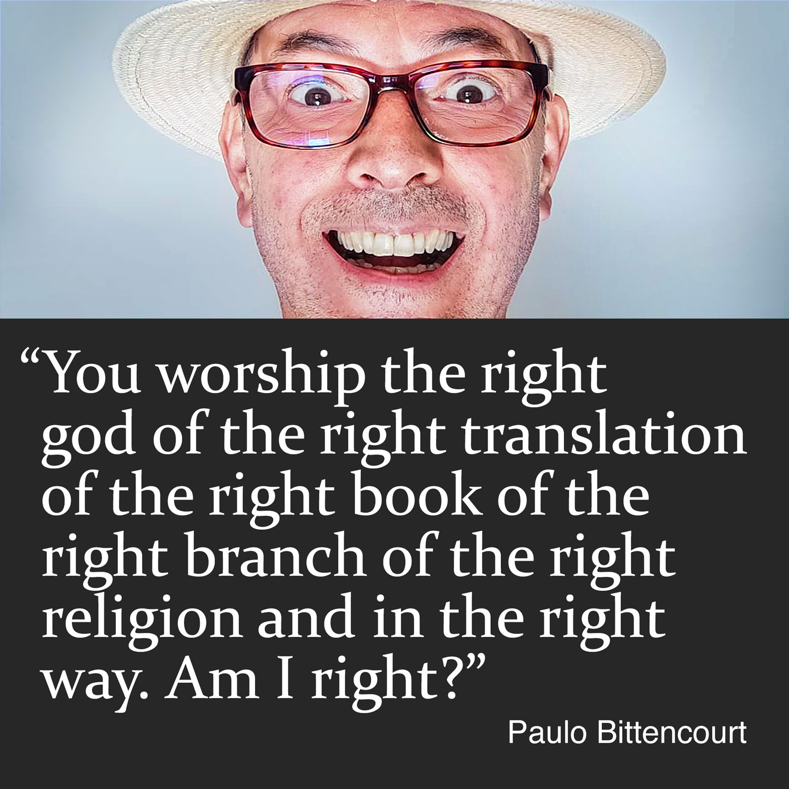
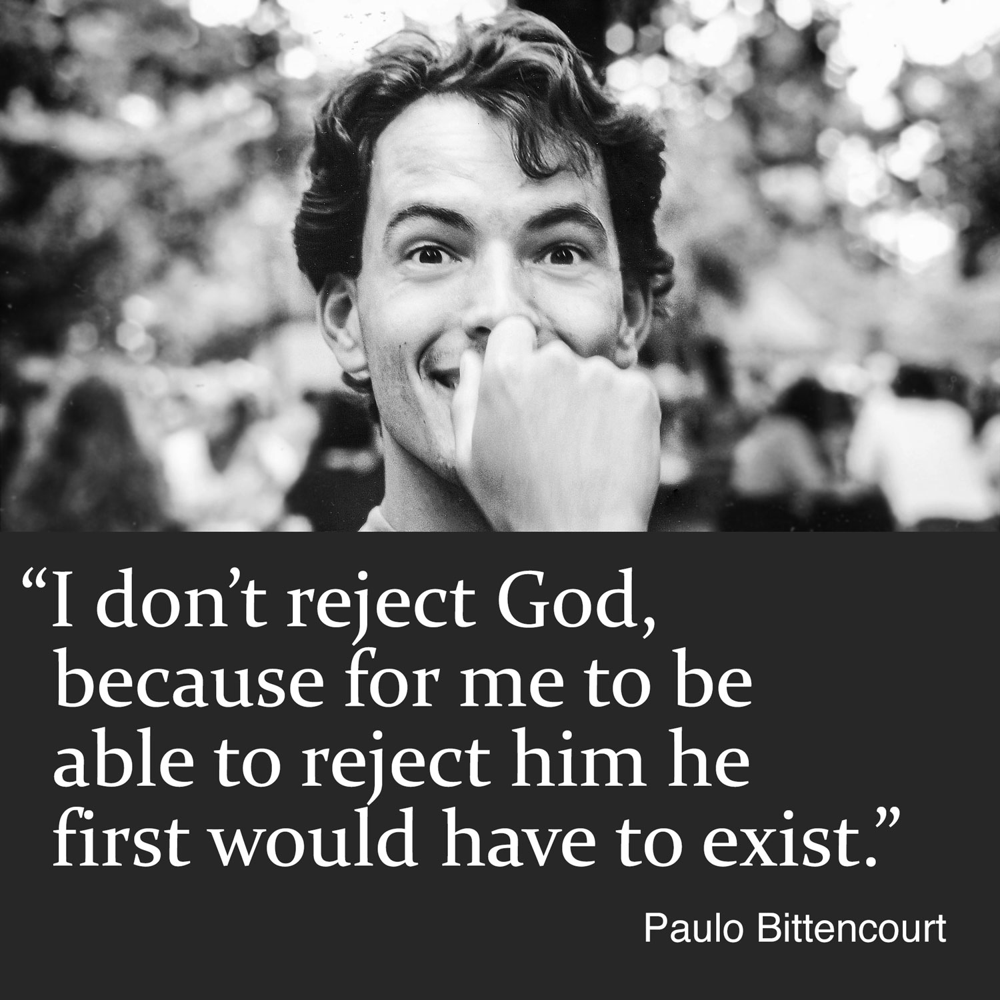
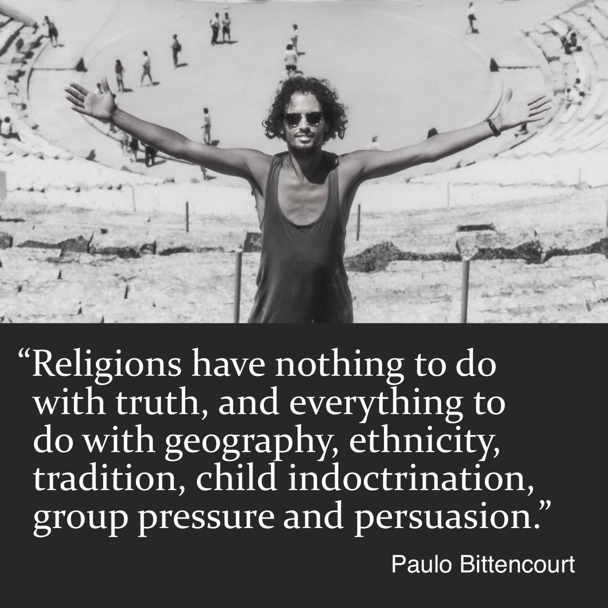
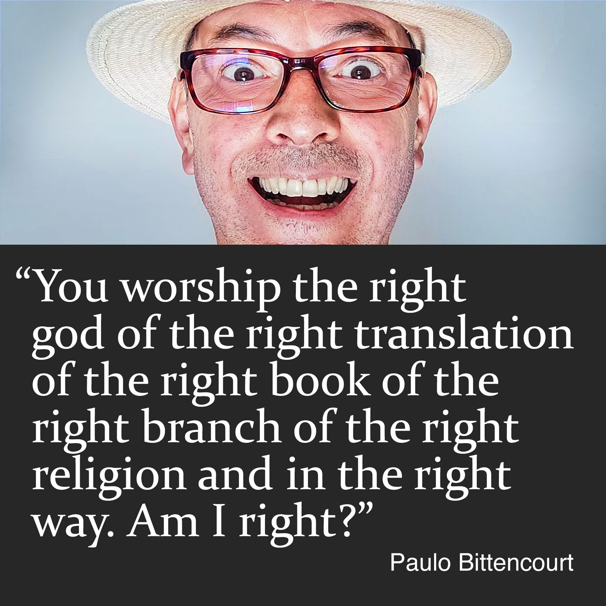
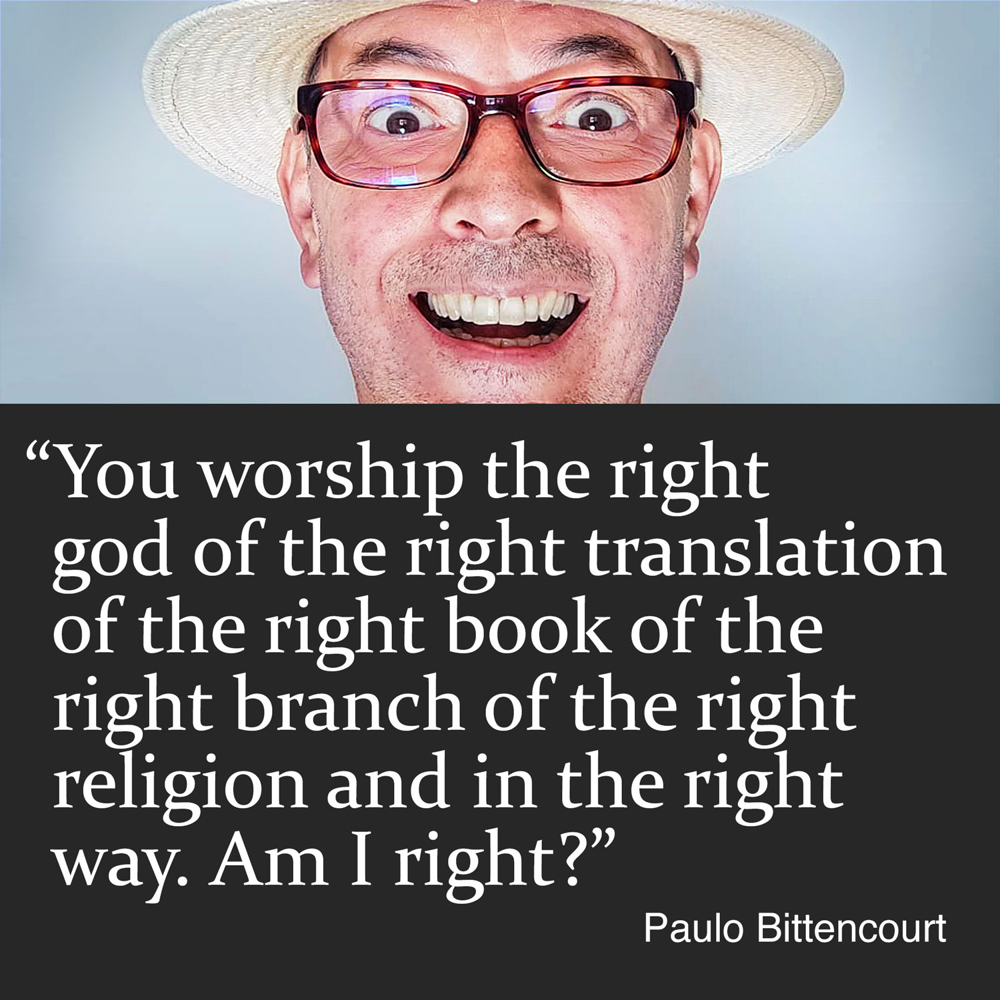
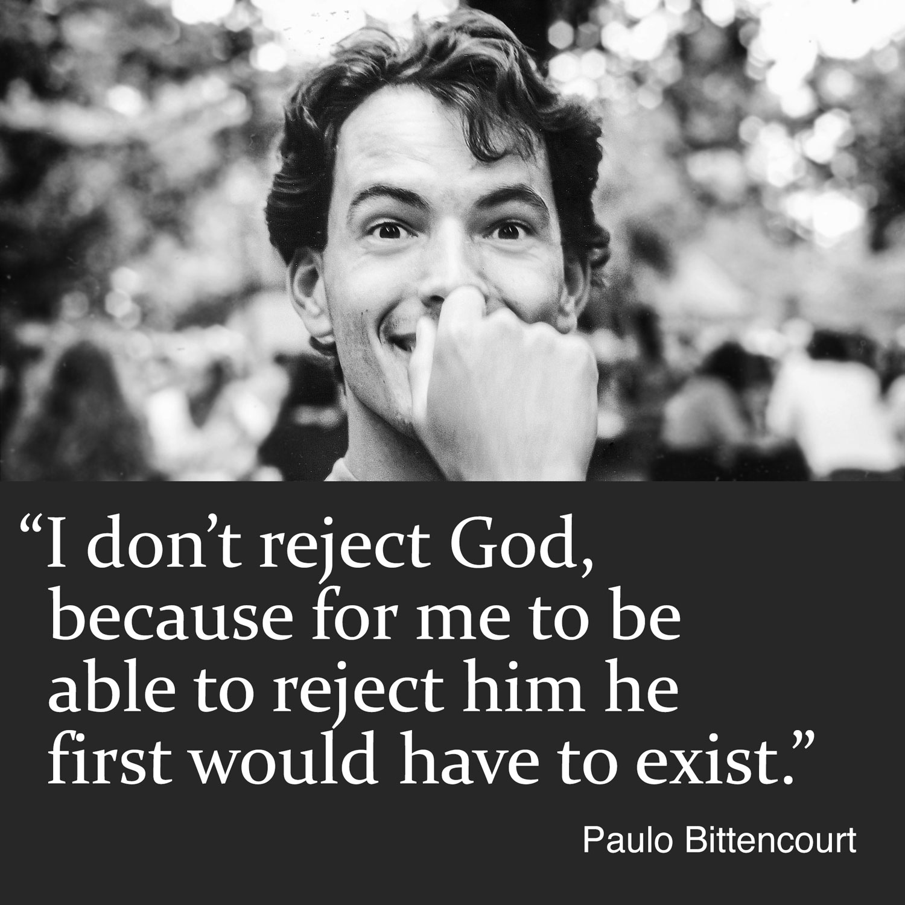
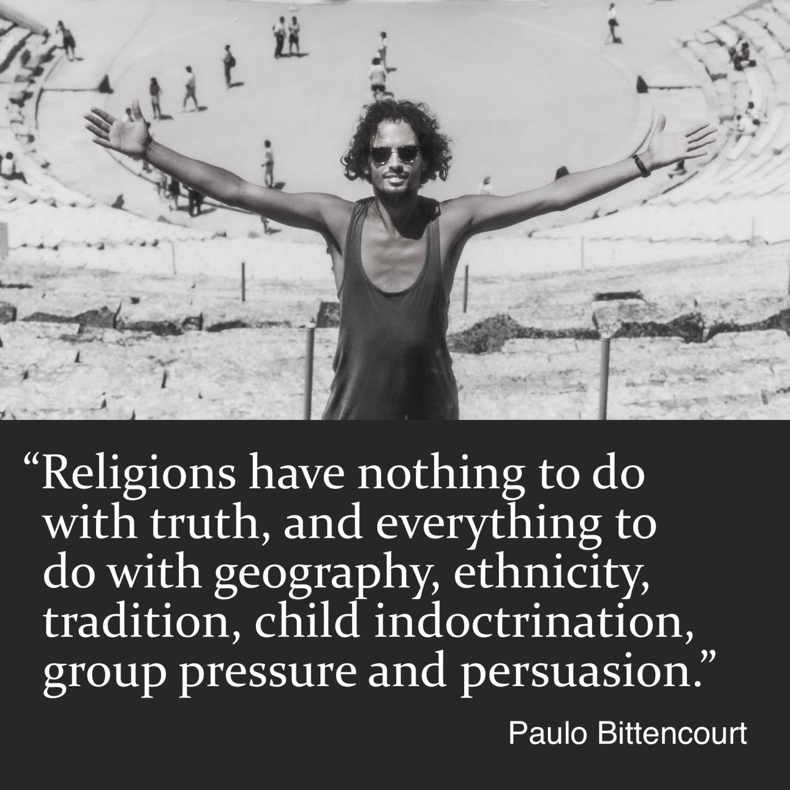
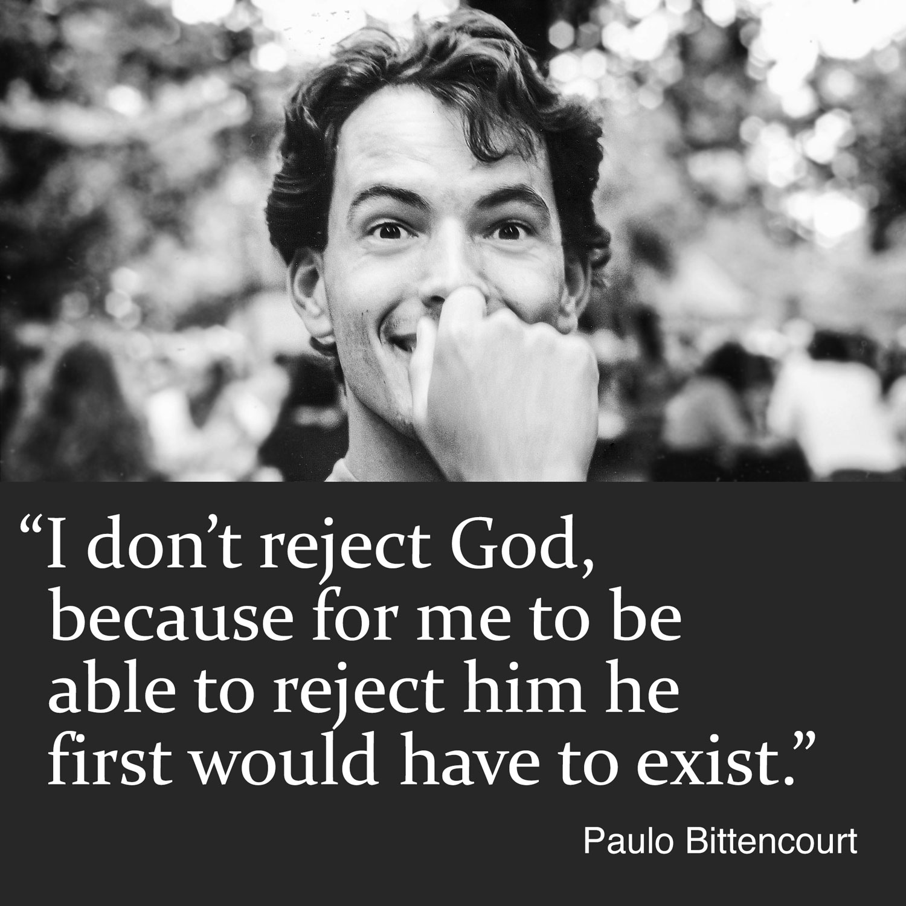
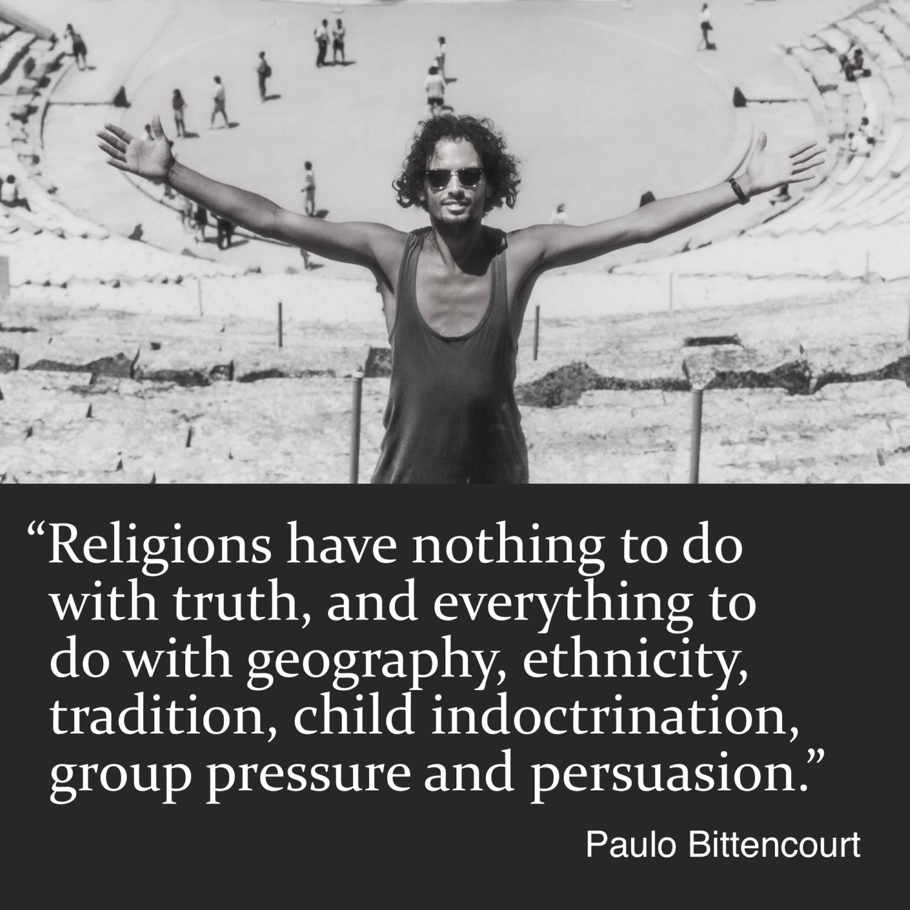

☰︎
Paulo Bittencourt
Freethought, Humanism, Atheism
Books
•
Español
•
Português
•
Deutsch
Paulo Bittencourt’s Best Quotes
Share this quote

Share this quote
Share this quote

Share this quote

Share this quote
Share this quote
All quotes
◀︎
☰︎
▶︎

 

 


